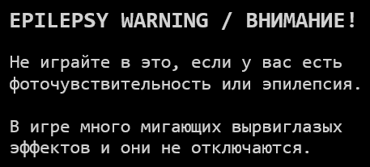

Сделал табличку EPILEPSY WARNING
Давно просили сделать это предупреждение, но я нещадно продолжал выжигать мозги своим друзьям эпилептикам... Сегодня решил исправиться, пока только нарисовал это:
Давно просили сделать это предупреждение, но я нещадно продолжал выжигать мозги своим друзьям эпилептикам... Сегодня решил исправиться, пока только нарисовал это:

Погуглите чужие дисклеймеры, они все сделаны не по правилам - особо мощное комбо я видел на картинке с кислотным фоном, где была огромная яркая надпись WARNING, окружённая контрастными жёлто-чёрными полосками с белым текстом снизу + эффект свечения на нём, наверное автор этой картинки хотел чтобы зритель подольше лежал под столом в судорогах...
Тут главное не показывать на весь экран белый фон, иначе игроки вообще подохнут. Плавно (нелинейно даже) появляющаяся из темноты не контрастная надпись с предупреждением и без ярко красного цвета - идеальный рецепт. Желательно, писанины поменьше, иначе это даже здоровые люди не прочитают (100%). Скип только по кнопке. Я сделал самый юзер-френдли посыл нахуй из игры.